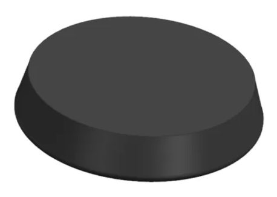
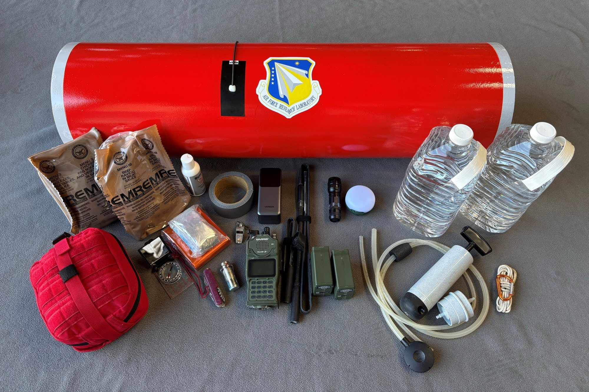
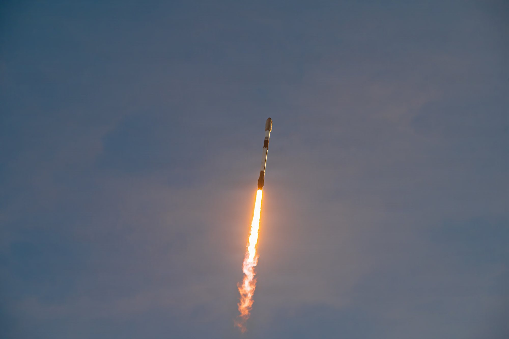

Fino a poche settimane fa Starfall era uno dei progetti più riservati di SpaceX: un disco lanciato senza annunci, di cui si sapeva quasi tutto grazie ai documenti depositati presso le autorità federali. Ora la capsula ha una vetrina. All’indirizzo spacex.com/starfall la società presenta il servizio con lo slogan «Affordable, routine access to microgravity», accesso economico e regolare alla microgravità, pubblica le caratteristiche tecniche e invita aziende e laboratori a contattarla per far volare produzioni, ricerche e prove. È il passaggio da esperimento a prodotto.
Che cosa offre la pagina
La scheda tecnica è breve e precisa. Ogni missione può portare fino a 1.000 chilogrammi di carico utile, fornisce 1 kilowatt di potenza e collega gli esperimenti attraverso un’interfaccia Ethernet. La durata della missione non è fissa: viene adattata alle esigenze del cliente. Il dettaglio più nuovo riguarda le comunicazioni: il carico resta collegato per tutto il volo attraverso Starlink. Significa che un ricercatore può ricevere dati dal suo esperimento mentre è ancora in orbita, e magari correggere qualcosa, invece di aspettare il rientro per scoprire com’è andata.
SpaceX mette in fila tre argomenti. Il primo è il tempo: torri di caduta e voli parabolici garantiscono pochi secondi di assenza di peso, Starfall promette settimane continue. Il secondo è l’ambiente: ricreare a terra il vuoto e la microgravità costa molto e riesce solo in parte, mentre in orbita vuoto, radiazione e assenza di peso sono gratis. Il terzo è la frequenza dei voli: «Microgravity only matters if you can access it regularly and at scale», la microgravità conta solo se ci si può arrivare spesso e su larga scala. E la risposta di SpaceX è una sola: «By launching on Starship, Starfall brings a reliable and scalable cadence previously unavailable to the market», lanciando con Starship, Starfall offre una cadenza affidabile e scalabile che il mercato finora non aveva.

Farmaci, tessuti, semiconduttori
La pagina indica tre mercati. Il primo è la ricerca biomedica: «Without gravity, biology accelerates and reorganizes», senza gravità la biologia accelera e si riorganizza. SpaceX parla di impianti e biomateriali stratificati, di ricerca oncologica e sulle cellule staminali, di organoidi coltivati da staminali pluripotenti indotte e di tessuti di ricambio. Il secondo è la farmaceutica: a terra la convezione e la sedimentazione dovute alla gravità peggiorano la qualità dei cristalli, mentre in microgravità proteine e piccole molecole formano cristalli più piccoli e uniformi. È un tema concreto, perché la forma del cristallo può cambiare quanto un farmaco si scioglie e quindi quanto funziona. Il terzo è la scienza dei materiali, con semiconduttori e materiali di nuova generazione cresciuti nel vuoto.
Mancano due informazioni che i clienti vorranno sapere subito: il prezzo e la data del primo volo commerciale. La pagina non ne parla e si chiude con un modulo di contatto.
Da progetto segreto a prodotto
Il cambio di tono è netto. La prima Starfall è partita il 23 giugno 2026 con la missione Starfall Demo, annunciata pochi giorni prima, ed è stata recuperata nel Pacifico. La seconda ha volato il 20 ottobre in cima ai carichi del Falcon 9 della missione rideshare Bandwagon-5, di cui Rivoluzione Spaziale aveva seguito la vigilia: questa volta il nome compariva sulla pagina della missione, ma SpaceX non diceva che cosa trasportasse. La FAA aveva autorizzato due voli dimostrativi, e sono stati fatti entrambi.
Poi sono arrivati i clienti. Nei conti del terzo trimestre, presentati il 20 ottobre, SpaceX ha scritto di aver firmato tre missioni Starfall commerciali, che voleranno su Starship. In teleconferenza la presidente Gwynne Shotwell ha descritto la capsula come un mezzo per un accesso «routine relatively low cost» alla microgravità, regolare e relativamente economico, utile anche a capire meglio malattie come il cancro e il diabete. E il marchio entra nel catalogo: lunedì 2 novembre nel negozio online di SpaceX è comparsa una maglietta Starfall, accanto a quelle di Starship, Starlink e Starshield.

Il primo cliente in divisa
Che cosa ci fosse a bordo nel volo di ottobre lo ha raccontato l’Air Force Research Laboratory, il laboratorio di ricerca dell’Aeronautica americana. Starfall trasportava alcuni contenitori sviluppati dal laboratorio per il programma Rocket Cargo, che studia se i grandi razzi commerciali possono consegnare materiali in qualsiasi punto del pianeta in tempi brevissimi, passando dallo spazio. Ogni contenitore portava attrezzature rappresentative di una missione vera, con un’attenzione particolare all’elettronica e al materiale di sopravvivenza: un localizzatore satellitare, batterie, un dissalatore a osmosi inversa, equipaggiamento di emergenza e materiale medico. Accanto c’erano sensori per misurare temperature, urti e vibrazioni dal lancio al rientro. I tecnici hanno anche provato a inserire nella capsula una zattera di salvataggio UNI-PAC III, candidata a un test futuro.
Il 26 ottobre il laboratorio ha confermato su X il recupero: «With support from @SpaceX, the AFRL agile cargo pods were recovered after splashdown in the Pacific Ocean», con il supporto di SpaceX i contenitori sono stati recuperati dopo l’ammaraggio nel Pacifico. Le foto mostrano il personale che apre e controlla un contenitore a Long Beach, in California. Il generale di brigata Douglas Wickert, comandante del laboratorio, ha parlato di un modo per «burn down risk, collect hard data», ridurre i rischi e raccogliere dati concreti. Adam Remaly, direttore dell’ufficio per il trasferimento tecnologico, l’ha definito «a critical achievement», un risultato fondamentale per dimostrare la consegna rapida da un punto all’altro del globo. I dati misurati non sono stati pubblicati.
Va tenuto il senso delle proporzioni. Il test serviva a capire se il carico sopravvive al viaggio, non a consegnarlo dove serve: un ammaraggio in mare aperto è molto diverso da un arrivo preciso vicino a un reparto. L’obiettivo di lungo periodo del programma sono decine di tonnellate per lancio, e il laboratorio lavora anche con Blue Origin, Rocket Lab, Sierra Space, Anduril, Inversion Space e Outpost Space.

Concorrente dei suoi clienti
Con la vetrina SpaceX entra in modo esplicito in un mercato che finora ha in buona parte costruito un’altra azienda: Varda Space Industries, che produce farmaci in orbita con capsule circa tre volte più piccole di Starfall. Una di queste, la W-7, ha volato sullo stesso Falcon 9 di Bandwagon-5. È una situazione insolita: SpaceX vende il passaggio in orbita a Varda e allo stesso tempo le fa concorrenza sul servizio finale. Il vantaggio dichiarato di SpaceX è la scala: una capsula pensata per la produzione in serie e, in prospettiva, lanciata a gruppi su Starship.
Cosa seguire adesso
La cadenza promessa dipende da Starship, che deve ancora diventare un razzo operativo. Il prossimo passo è Flight 15, con la prima data possibile al 12 novembre in attesa della licenza FAA: è il volo in cui SpaceX tenterà di riprendere con la torre sia il booster sia la Ship. Per Starfall restano da conoscere il prezzo, la data della prima delle tre missioni commerciali, le nuove autorizzazioni FAA per i voli oltre le due dimostrazioni e i primi dati del test militare.
Il dossier sulla previsione di Musk per il calcolo in orbita entro la fine del 2028 passa all’archivio Notizie.
Fonti pubbliche e tracce
Ultimo aggiornamento editoriale: 3 novembre 2026, ore 9:30 (ora italiana). Nel corpo non si ripete la fonte a ogni frase: le tracce sono raccolte qui. Le citazioni in inglese sono tradotte o riassunte subito dopo.
- SpaceX, pagina ufficiale Starfall: caratteristiche tecniche (1.000 kg, 1 kW, Ethernet, Starlink), mercati, citazioni sulla cadenza con Starship.
- Teslarati, 2 novembre 2026, «SpaceX’s Starfall just went from secret to storefront»: lancio della pagina, citazione di Gwynne Shotwell, tre missioni firmate, maglietta nel negozio SpaceX, confronto con Varda.
- Air Force Research Laboratory, comunicato del 20 ottobre 2026: programma Rocket Cargo, contenuto dei contenitori, dichiarazioni di Douglas Wickert, fornitori coinvolti, foto.
- AFRL su X, 26 ottobre 2026: recupero dei contenitori dopo l’ammaraggio nel Pacifico.
- Space.com, 29 ottobre 2026 e SpaceNews, 26 ottobre 2026: dichiarazione di Adam Remaly, recupero e ispezione dei contenitori.
- Rivoluzione Spaziale, dossier su Bandwagon-5 e Starfall, dossier sui conti del terzo trimestre e dossier su Flight 15: contesto su primo volo, autorizzazioni FAA, contratti e calendario di Starship.
Fotografie utilizzabili
Le due foto della capsula e del contenitore sono immagini SpaceX diffuse dall’Air Force Research Laboratory sull’evento stesso, usate con credito e solo a scopo editoriale non commerciale. Il disegno della capsula (documento FAA) e il lancio di Starfall Demo (U.S. Space Force) sono di pubblico dominio, da Wikimedia Commons. Dettagli in scheda dei crediti fotografici.
Apri il dossier sul calcolo in orbita archiviato · Archivio Notizie · Torna a SpaceX